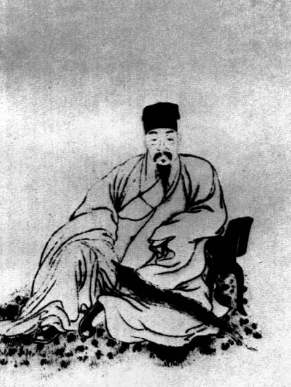

到此为止，华亭夏家的男性成员已无孑余。方余先生的两个儿子都是自杀身亡：继夏允彝之后，他的兄长夏之旭也因藏匿陈子龙被清廷追究，于丁亥五月二十五日，自缢于文庙颜子牌位旁。眼下，孙辈完淳也捐躯了，这很可能是方余先生一支的绝嗣。夏之旭膝下似乎无子，如有，从完淳很乐于与亲属中同辈人唱和的习惯看，我们应能发现他或他们的存在。前面说，完淳自己有个遗腹，但生下来是男是女，以及下落，异说难定，很不明朗，只知道钱秦篆自己后来也削发为尼了。因此我们认为，夏家的下场多半是满门都为国尽忠而亡。
不单如此，夏家两边的姻亲也丧之殆尽。大姊所嫁嘉定侯家，出了抗清著名领袖侯峒曾、岐曾兄弟（侯岐曾便是淑吉的公公）。兄弟二人所生诸子，又有数人自尽或被满清杀害。嘉善钱家，钱栴和堂兄弟钱棅同样死于国难，钱栴的两个儿子亦即完淳的内兄钱熙、钱默都随父起兵，后来钱熙“参总督吴昜军事，昜未败而熙先以病卒”[52]，钱默则削发为僧。
还有他的老师陈子龙，在至友夏允彝死后，坚持抗清两年，终被捕，“系舟中，泊跨塘桥下，子龙伺守者懈，猝起投水死。”[53]
短短几年，夏家亲朋故旧，如风摧林，飘零满地。
清廷刑部尚书吴达海在上呈顺治皇帝的报告中写道：
问得一名顾咸正，年五十七岁，系苏州府昆山县籍，由前朝癸酉科举人，历任陕西延安府推官。状招咸正遭崇祯国变，回家潜藏不出，有已正法子顾天逵，系官兵擒获已斩侯岐曾女婿，又顺治二年曾以谋逆被大兵杀死侯峒曾，有脱逃未获子侯玄瀞，系前年大兵杀死夏允彝在官子夏完淳姐夫。彼此俱系姻亲，常在侯家相会，谈及时事，各蓄异谋。[54]
“彼此俱系姻亲”，让我们看到了明末东南士夫气节之烈。这口宝贵的正气，经满清一个世纪的努力，通过杀夏完淳、杀金圣叹、杀戴名世、戮吕留良尸……终于斫伤一空。愈从事后看，我们愈明白完淳“长安无限屠刀肆，犹有吹箫击筑人”这股热血的由来。他对现实的感受，以及对历史的了解和饱读，使他不难预见到中国将面临一段虎狼之秦式的黑暗和倒退。这也是明清鼎革之际每位有文明之忧之士，共同的悲戚。而近代以来，由于中国对西方的落后，连知识分子也把罪责归到中国文化身上，归到自己身上。逮至当代，知识分子更因了这番“原罪”横遭唾骂与羞辱，称“臭老九”，从品质到人格皆被蔑视，谁都嘲笑为“嘴尖皮厚腹中空”的无用之辈。其实人们忘了甚或已根本不知，直到明代末年，中国文化及其知识分子并未失去创造力与激情，更未堕其品格；落后西方的那二百年，对中国来说，亡国犹属其次，更主要在于被一种落后文化死死拖了后腿，原已浮现的晨光熹微因而遮蔽和驱散了。面对夏完淳们的故事和存在，我们应该知道，在中国，知识分子并非生就委琐之相，也绝不是天然的摇尾系统。

陈子龙
明末杰出文人， 与夏允彝等并称“云间六子”，共创几社。乙酉夏，在太湖起兵，夏完淳就是追随于他从事抗清活动。
侯岐曾石刻像
他便是完淳大姊淑吉的公公。其兄侯峒曾因领导嘉定抗清被害，侯岐曾本人也因支持陈子龙而被捕、不屈死。
[1] 鲁迅《上海文艺之一瞥》，《鲁迅全集》第4卷，人民文学出版社，1957，第233页。
[2] 《恩怨录•鲁迅和他的论敌文选》，今日中国出版社，1996，第545页。
[3] 郭沫若《夏完淳》，《郭沫若全集》文学编第七卷，人民文学出版社，1986，第413页。
[4] 《恩怨录•鲁迅和他的论敌文选》，今日中国出版社，1996，第540-541页。
[5] 陈子龙《夏方余先生传》，《夏完淳集笺校》，上海古籍出版社，1991，第505页。
[6] 同上。
[7] 陈子龙《夏方余先生传》，《夏完淳集笺校》，上海古籍出版社，1991，第506页。
[8] 张岱《江南死义列传》，同上，第528页。
[9] 侯玄涵《吏部夏瑗公传》，《夏完淳集笺校》，上海古籍出版社，1991，第518页。
[10] 王鸿绪《夏允彝传》，同上，第521页。
[11] 眉史氏《复社纪略》，中国历史研究社编《东林始末》，神州国光社，1947，第181页。
[12] 眉史氏《复社纪略》，中国历史研究社编《东林始末》，神州国光社，1947，第184页。
[13] 王鸿绪《夏允彝传》，《夏完淳集笺校》，上海古籍出版社，1991，第522页。
[14] 同上。
[15] 侯玄涵《吏部夏瑗公传》，《夏完淳集笺校》，上海古籍出版社，1991，第519页。
[16] 同上。
[17] 蔡嗣襄《夏存古传》，《夏完淳集笺校》，上海古籍出版社，1991，第546页。
[18] 《增修紫隄村志》，同上，第544页。
[19] 王弘撰《夏孝子传》，同上，第545页。
[20] 查继佐《行取知县夏公传》，同上，第531页。
[21] 温睿临《夏允彝传》，同上，第538页。
[22] 郭沫若《夏完淳》，《郭沫若全集》文学编第七卷，人民文学出版社，1986，第442页。
[23] 陈去病《五石脂》，《丹午笔记•吴城日记•五石脂》，江苏古籍出版社，1999，第290页。
[24] 《增修紫隄村志》，《夏完淳集笺校》，上海古籍出版社，1991，第544页。
[25] 朱溶《忠义录》，同上，第528页。
[26] 夏淑吉《先考功忌日三首》，引自《郭沫若全集》文学编第七卷，人民文学出版社，1986，第418页。
[27] 夏完淳《续幸存录》自序，《夏完淳集笺校》，上海古籍出版社，1991，第422页。
[28] 屈大均《皇明四朝成仁录》（一），明代传记丛刊•名人类，台湾明文书局，1991，第484页。
[29] 沈起《东山国语补》，台湾文献丛刊第五辑《东山国语•鹿樵纪闻》（合订本），台湾大通书局，1995，第101页。
[30] 沈起《东山国语补》，台湾文献丛刊第五辑《东山国语•鹿樵纪闻》（合订本），台湾大通书局，1995，第101页。
[31] 李聿求《鲁之春秋》钱栴传，浙江古籍出版社，1984，第135-136页。
[32] 夏完淳《精卫》，《夏完淳集笺校》，上海古籍出版社，1991，第146页。
[33] 夏完淳《易水歌》，《夏完淳集笺校》，上海古籍出版社，1991，第171页。
[34] 夏完淳《六君咏》，同上，第111-121页，以下不赘。
[35] 温睿临《南疆逸史》金声传，中华书局，1959，第97页。
[36] 李天根《爝火录》，浙江古籍出版社，1986，第504页。
[37] 夏完淳《续幸存录》自序，《夏完淳集笺校》，上海古籍出版社，1991，第422页。
[38] 同上，第431页。
[39] 同上，第434页。
[40] 同上，第455页。
[41] 黄宗羲《汰存录》，《黄宗羲全集》第一册，浙江古籍出版社，1993，第327页。
[42] 李清《自序》，《三垣笔记》，中华书局，1997，第3页。
[43] 杜登春《童心犯难集》，《夏完淳集笺校》，上海古籍出版社，1991，第618-619页。
[44] 夏完淳《虎丘遇九高》，同上，第334页。
[45] 屈大均《皇明四朝成仁录》（一），明代传记丛刊•名人类，台湾明文书局，1991，第484-485页。
[46] 抱阳生《甲申朝事小纪》，书目文献出版社，1987，第732页。
[47] 陈去病《五石脂》，《丹午笔记•吴城日记•五石脂》，江苏古籍出版社，1999，第290页。
[48] 《江南各省招抚内院大学士洪承畴题本》，中央研究院历史语言研究所《明清史料己编》第一本，1957年原版，中华书局影印，1987，第93页。
[49] 夏完淳《狱中上母书》，《夏完淳集笺校》，上海古籍出版社，1991，第413-414页。
[50] 沈起《东山国语补》，台湾文献丛刊第五辑《东山国语•鹿樵纪闻》（合订本），台湾大通书局，1995，第102页。
[51] 李聿求《鲁之春秋》钱栴传，浙江古籍出版社，1984，第136页。
[52] 李聿求《鲁之春秋》钱栴传，浙江古籍出版社，1984，第136页。
[53] 同上，第132页。
[54] 《刑部尚书吴达海题本》，《夏完淳集笺校》，上海古籍出版社，1991，第632页。